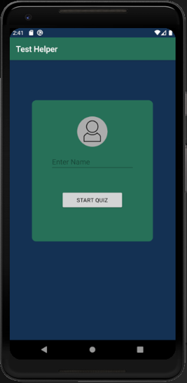
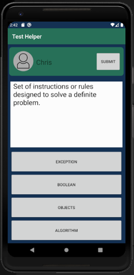

Android App
Scenario:
A school has hired me to design a user-friendly quiz app so students will be able to take a quiz on their phone instead of needing a computer. With school being more online than in class, some students don't have access to computers, so they want an alternative.
Here are some visual examples:
 Reflection:
During this assignment I had to be creative in my design and how the app functioned which is one of the reasons I enjoyed the android app class. Working around the restrictions that were given to us and designing a well laid out and appealing looking app is the best case scenario for my skill set.
With the restrictions of making sure that the answers were randomized for each question and each question was only displayed once. We were given the question and answers in a file. I loaded the file into what's called a hash map. (Key, Value) Assigned the answers and questions into their own lists and any time I picked a question I would get the correct answer from the hash map. When it came time to assigning the answers to the buttons I randomized which button would contain the right answer so that it wouldn't appear in the same place every time. For the other 3 choices I'd shuffle the answer list and pick 3 different answers to go along with the correct one. When the question was answered I just removed it from the list. Once the list had no more answers left, the quiz was over.
When looking back at what I've learned from the assignment and what I know now, I could easily enhance this app to be more dynamic. By hooking up a database to the app I would be able to conduct any number of quizzes without much extra work.
By doing this I wouldn't be limiting the app to only using just a text file and could extend the app's usefulness. I would add a dynamic list that would populate from the database so the user could pick from any number of quizzes that were available. Instead of updating the app to add a new quiz, all you would have to do is update the database.
When it comes to my work, I am always looking on how I can improve.